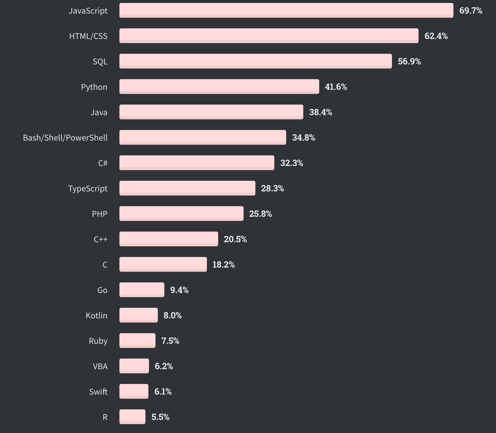
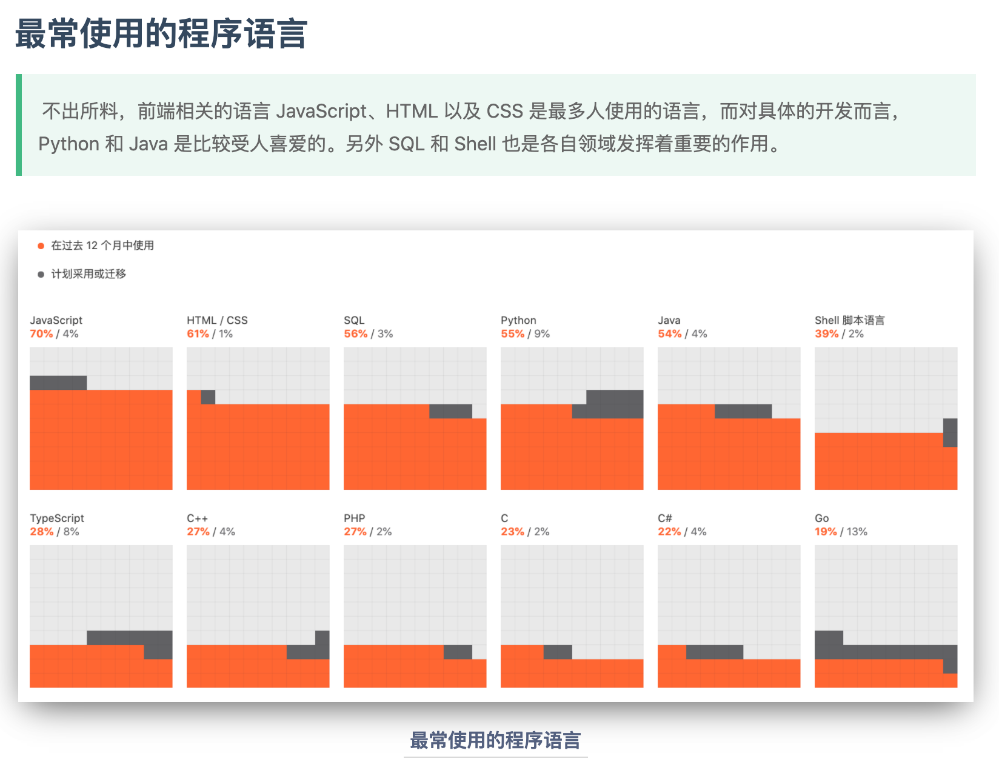
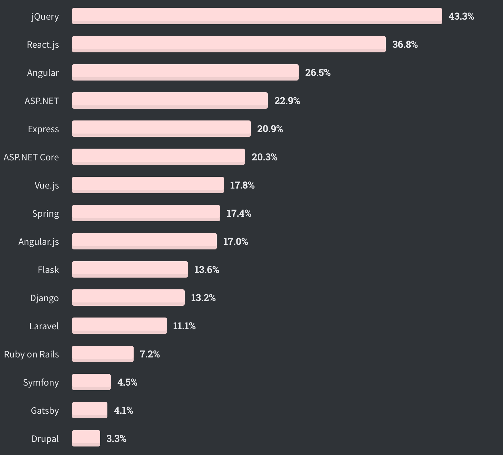
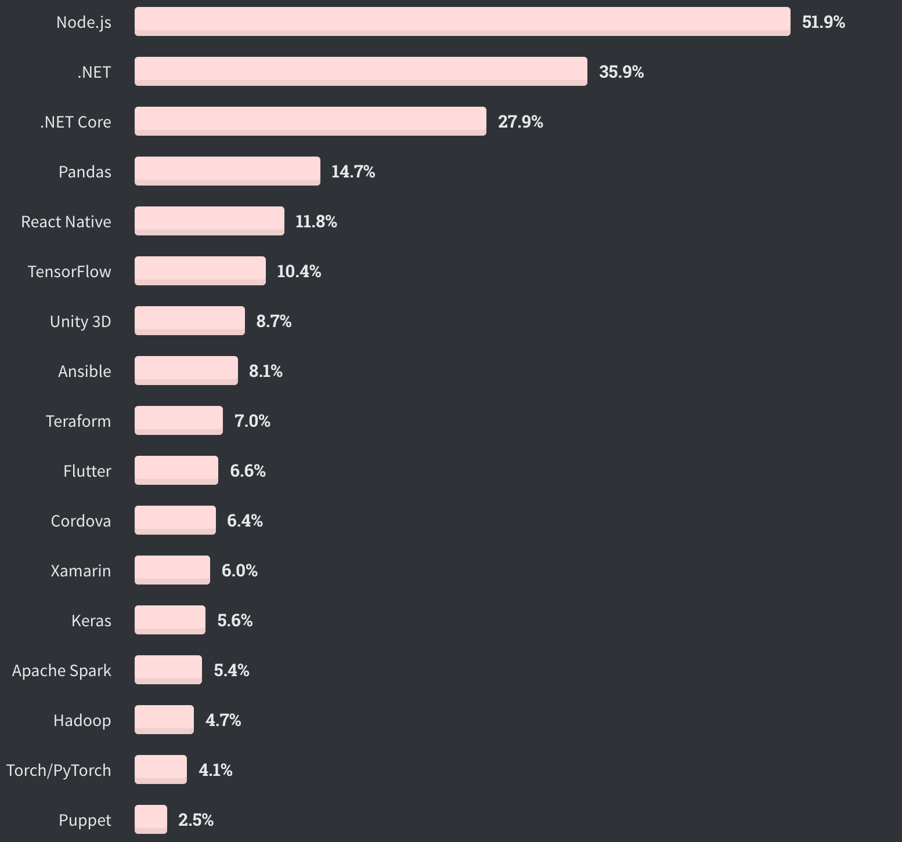
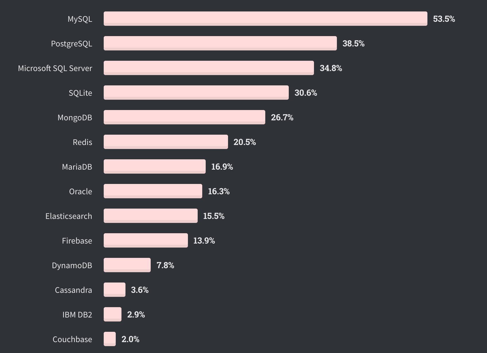
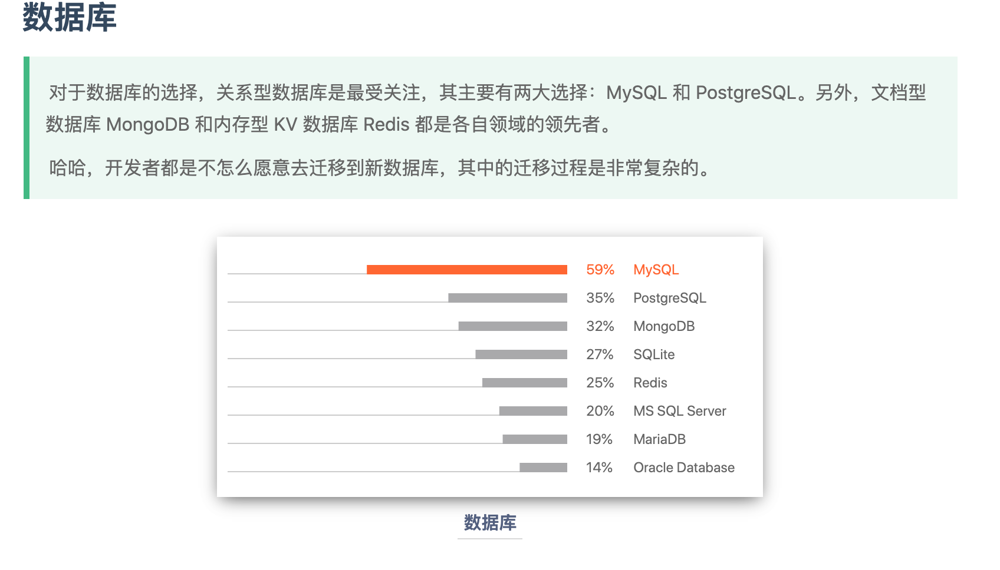
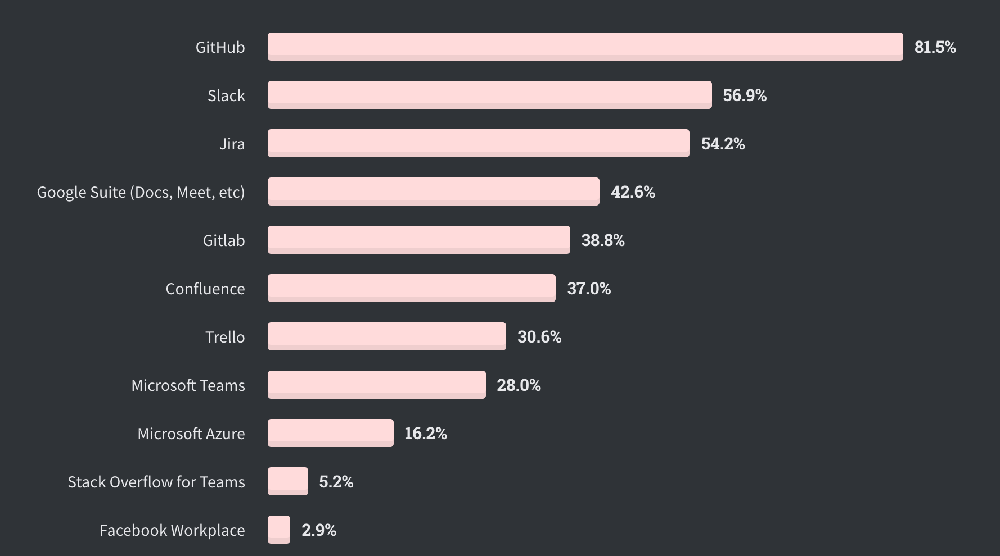
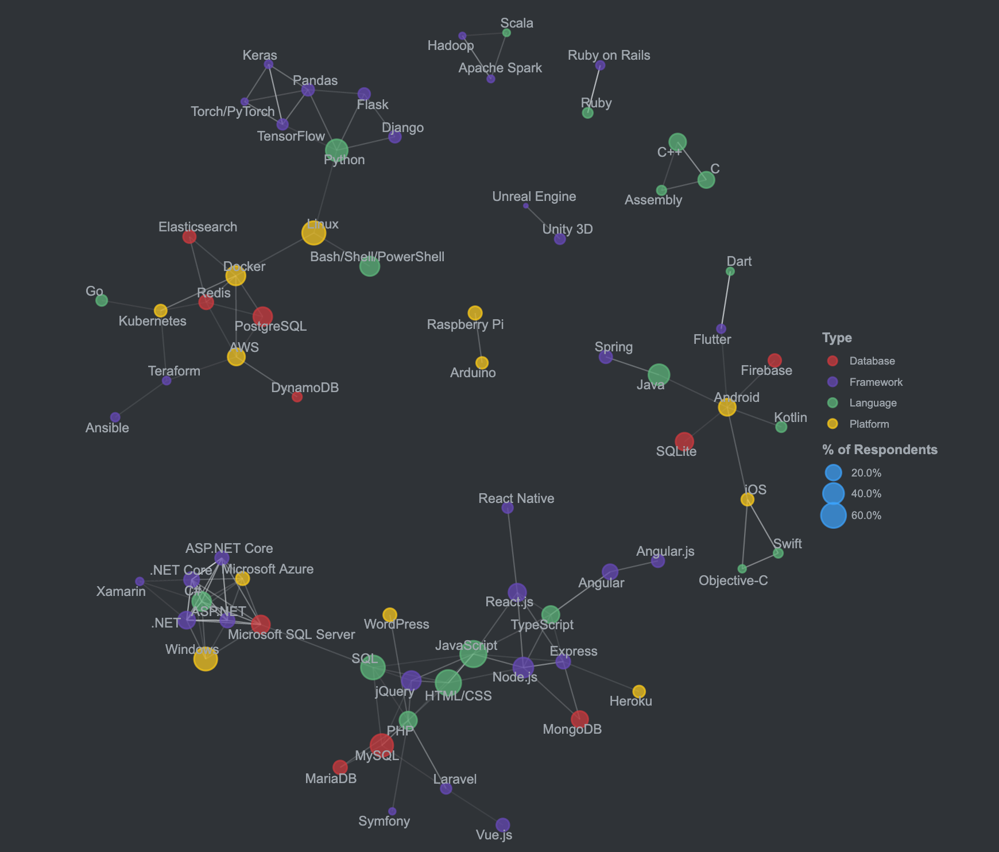

2020 StackOverflow 开发者现状调研
最近 Stackoverflow 公布了 2020 年的调查问卷结果，让我们看看有什么有趣的发现吧。
最受欢迎的语言
跟上次我在博客2020 开发者生态系统现状文章中最常使用的程序语言章节里显示结果相似。
另外，在最受开发者热爱的语言中，Rust，TypeScript 和 Python 高居前三甲。
Web 框架
比较奇怪的是这次调查是把前端和后端的框架放在一起统计了；而令人意外的还是
jQuery竟然处于垄断地位😨。
其他技术
针对其他技术的使用，Node.js 广受欢迎，另外机器学习和数据分析相关的技术同样不可小觑。当然我们也看到了一些运维相关的技术，比如 Ansible 和 Teraform。
数据库
数据库作为储存当今数据为王的珍贵数据，就显得尤为重要。而在关系型数据库领域，MySQL 依然是领先者，PostgreSQL 紧随其后。
跟上次我在博客2020 开发者生态系统现状文章中数据库章节相比，搜索引擎 Elasticsearch 上榜了。
协作工具
不出意料，GitHub 是最受欢迎的协作工具，果然名不虚传。另外上榜都是协作交流和项目管理方面的工具。
调研工具
调研工具，最好的方法开始免费使用，或者像熟悉的开发者询问和在论坛上咨询。

彩蛋
最后附上一张技术的关系图。
附录
想要查看具体详细的调查分析报告，通过下面的网址进行查阅。
2020 Developer Survey: https://insights.stackoverflow.com/survey/2020
更多精彩内容请关注：

本博客所有文章除特别声明外，均采用 CC BY-NC-SA 4.0 许可协议。转载请注明来自 知识碰撞！
评论